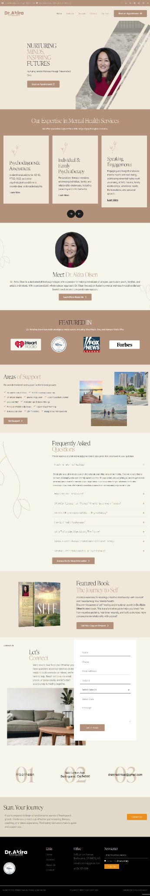

Booking website
Dr. Akira
The challenge
Present professional authority, services and appointments in a calm sequence.
Key decisions
- Show trust early.
- Explain services before booking.
- Keep the appointment path visible.
The improved journey
Prospective clients can understand the service before choosing an appointment.